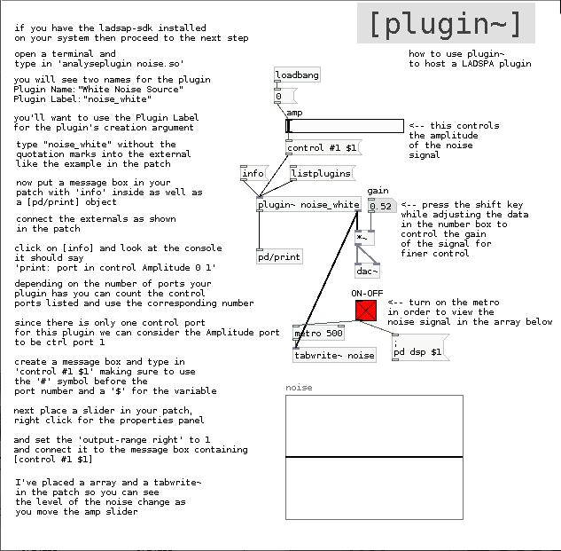

Using LADSPA Plugins
There are three puredata objects that can host a LADSPA plugin:
[plugin~] was developed by Jarno Seppänen
http://pure-data.sourceforge.net/old/documentation.php#plugin~
[ladspa~] was developed by Moumar and its help file also has some stability issues
http://bitbucket.org/moumar/ladspa/wiki/Home
[dssi~] was developed by Jamie Bullock and can be found here:
http://puredata.info/Members/jb/
Setting up Pd to use [plugin~]
[plugin~] requires the path to your LADSPA directory to be set as the LADSPA_PATH in the environment.
Here's a quick explanation on how to set your PATH variable:
open a terminal app
then type in the following at the prompt:
export LADSPA_PATH=/usr/lib/ladspa:/usr/local/lib/ladspa:~/.ladspa
check to see that you've set your path correctly by typing
echo $LADSPA_PATH
Of course the above only works for the time you are logged into your computer. In other words, if you log out or reboot you will have to type this in again.
If you want these changes to be permanent then do the following:
(THIS WORKS FOR LINUX [and maybe OS X] SYSTEMS ONLY)
open a terminal and type in
nano ~/.bashrc
This will open your .bashrc file in a text editor in your terminal.
***PLEASE MAKE A BACK-UP COPY OF THIS FILE BEFORE EDITING!!!***
Scroll to the bottom and type in
PATH=$LADSPA_PATH:/usr/lib/ladspa:~/.ladspa:/usr/local/lib/ladspa
Do not use spaces and don't forget the colons in between paths. And remember to save your changes. You can put a comment using a '#' at the beginning of a line. Adding a comment will help you to remember what something is or does when you look at it later on.
If you already have the ladspa-sdk installed on your system you can use the command "listplugins" in a terminal to get a list of all the LADSPA plugins on your system.
No worries, if you don't have the ladspa-sdk, you can install it easily by entering the following in a terminal:
sudo apt-get install ladspa-sdk
In fact, it might be useful for you to save a text file of all your plugins for reference.
If you'd like to do this then type the following into a terminal:
listplugins > ~/my_dir_name_here/plugs.txt
Using the [plugin~] object in a patch

Fig 1. - Cheat Sheet for using [plugin~]
In order to use the [plugin~] object in a patch you will have to know how to' talk' to it, i.e. what messages it takes to control it.
First we'll try using a plugin that comes with the ladspa-sdk we've just downloaded
here is some info about the plugins that come with the ladspa-sdk:
http://www.ladspa.org/ladspa_sdk/example_plugins.html
Let's start with something simple like a noise generator to get the hang of things.
First we need to find the 'Plugin Label' in order to instantiate the plugin
the simplest way to do this is to use a command that installed along with the ladspa-sdk
Looking in '/usr/lib/ladspa' directory we see the filename for the noise plugin is 'noise.so'
so let's open a terminal and type in the following:
analyseplugin noise.so
we should see a report in the terminal:
Plugin Name: "White Noise Source"
Plugin Label: "noise_white"
Plugin Unique ID: 1050
Maker: "Richard Furse (LADSPA example plugins)"
Copyright: "None"
Must Run Real-Time: No
Has activate() Function: No
Has deativate() Function: No
Has run_adding() Function: Yes
Environment: Normal or Hard Real-Time
Ports: "Amplitude" input, control, 0 to ..., default 1, logarithmic
"Output" output, audio
The Plugin Label for the noise.so plugin is "noise_white"
So place a [plugin~] object in your patch and enter the label we found in the previous step into it.
After instantiating the plugin we should see a report about the plug in the Pd console:
verbose( 1):plugin~: found plugin "noise_white" in library "/usr/lib/ladspa/noise.so"
verbose( 1):plugin~: constructed plugin "White Noise Source" successfully
verbose( 1):plugin~: plugin ports: audio 0/1 ctrl 1/0
verbose( 1):plugin~: plugin active
plugin~: "White Noise Source"
We see that we have yet another name for the plugin of "White Noise Source" but we will ignore that for now.
On the third line we see we have one control port which uses the left inlet.
But we still need more info in order to use the plugin.
Place a message box in your patch and type in
[info]
connect it to the left inlet of [plugin~ noise_white] and the outlet of the [plugin~]
to a [print] -or- [pd/print] object
after sending the [info] message
we should see in the Pd console:
print: port in control Amplitude 0 1
print: port out audio Output 0 1
The control port we want to use is called Amplitude and has a range from 0 - 1
In order to use this parameter we need to count the number of control ports
and use that number in a message box
Since we only have one control port (Amplitude) the number we'll use is '#1'
Enter the following into a message box:
[control #1 ]
and connect that to the [plugin~ noise_white] object left inlet
next we need to add a number box or a slider and set its range to 0 - 1
connect that to the inlet of the message box
Then connect the output of the plugin to a [dac~] and turn on the patch
as you slowly move the slider from 0 - 1 you should hear the white noise being generated.
Summary
While the above seems somewhat complicated it's simpler than it looks and can be broken down into the following steps:
1 - find the "Plugin Label" on the command line
2 - send an [info] message to [plugin~ <Plugin Label>] for a list of control ports
3 - count control ports
4 - send data to the port number of the parameter you want to control
it becomes much easier after you've performed these four simple steps a couple of times.
More info on LADSPAs in general:
http://linuxdevcenter.com/pub/a/linux/2001/02/02/ladspa.html